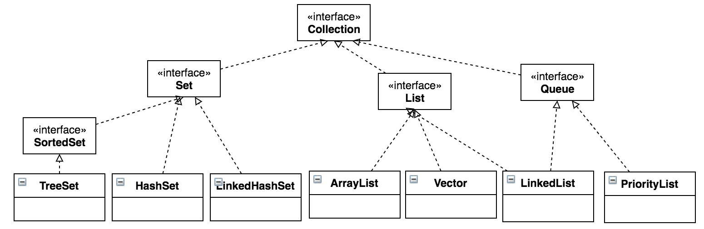
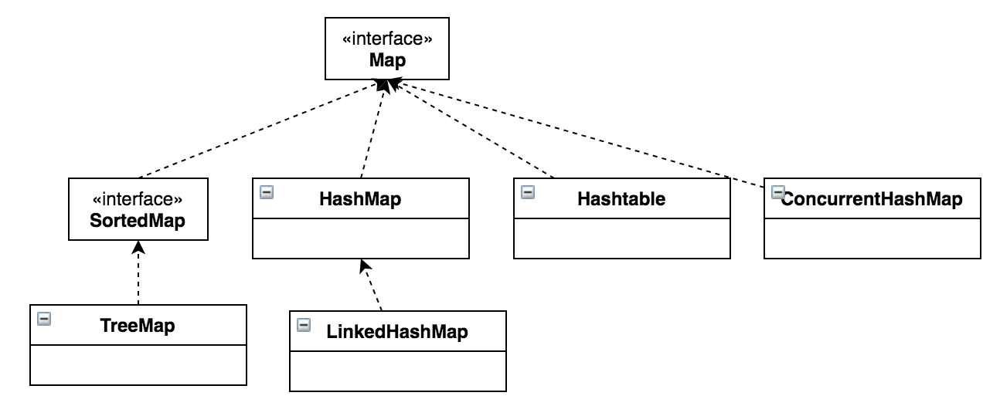

Java容器
容器主要包括Collection和Map两种，Collection存储着对象的集合，而Map存储着键值对（两个对象）的映射表。
Collection

Set
- TreeSet：基于红黑树实现，支持有序性操作，例如根据一个范围查找元素的操作。但是查找效率不如HashSet，HashSet查找的时间复杂度为O(1)，TreeSet则为O(LogN)
- HashSet：基于哈希表实现，支持快速查找，但不支持有序性操作。并且失去了元素的插入顺序信息，也就是说使用 Iterator 遍历 HashSet 得到的结果是不确定的
- LinkedHashSet：具有 HashSet 的查找效率，且内部使用双向链表维护元素的插入顺序，有点类似于HashMap和LinkedHashMap
List
- ArrayList：基于动态数组实现，支持随机访问
- Vector： 和ArrayList 类似，但它是线程安全的，通过
synchronized关键字实现 - LinkedList：基于双向链表实现，只能顺序访问，但是可以快速地在链表中间插入和删除元素。不仅如此， LinkedList 还可以用作栈、队列和双向队列
- Stack
- CopyOnWriteArrayList
Queue
- LinkedList：可以用它来实现双向队列
- ArrayDeque
- ArrayBlockingQueue
- LinkedBlockingQueue
- PriorityQueue：基于堆结构实现，可以用它来实现优先队列
Map

- TreeMap：基于红黑树实现
- HashMap：基于哈希表实现
- HashTable：和HashMap类似，但它是线程安全的，这意味着同一时刻多个线程可以同时写入HashTable 并且不会导致数据不一致。目前不建议使用
- ConcurrentHashMap：采用ConcurrentHashMap代替HashTable来支持线程安全，并且ConcurrentHashMap的效率会更高，因为ConcurrentHashMap引入了分段锁
- LinkedHashMap：使用双向链表来维护元素的顺序，顺序为插入顺序或者最近最少使用（LRU）顺序。默认是插入顺序，可以在构造时指定顺序。
public LinkedHashMap(int initialCapacity,
float loadFactor,
boolean accessOrder) {
super(initialCapacity, loadFactor);
this.accessOrder = accessOrder;
}
容器的设计模式
迭代器模式
Collection继承了Iterable接口，其中的iterator()方法能够产生一个Iterator对象，通过这个对象就可以迭代遍历Collection中的元素。
适配器模式
java.util.Arrays#asList()可以把数组类型转换为List类型。
public static <T> List<T> asList(T... a)
asList() 的参数为泛型的变长参数，不能使用基本类型数组作为参数，只能使用相应的包装类型数组。